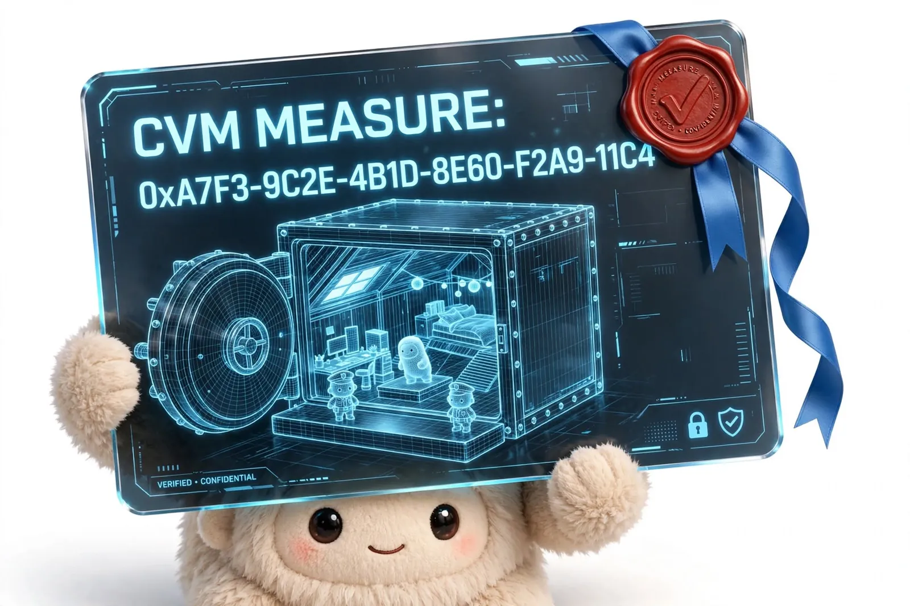
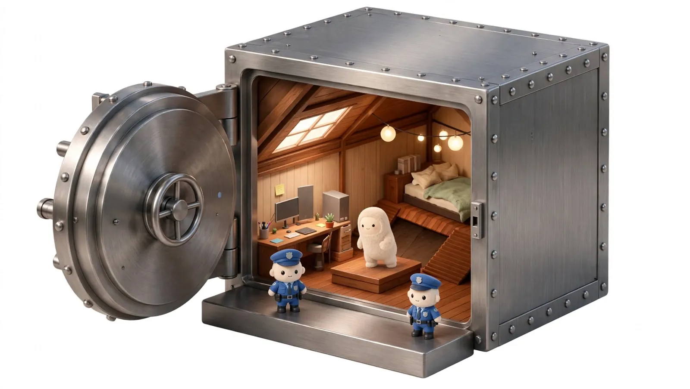
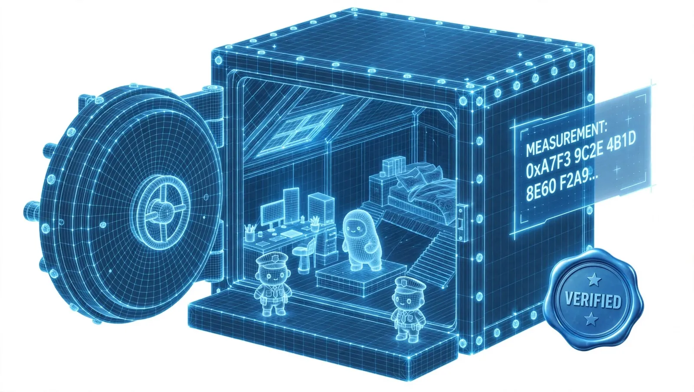
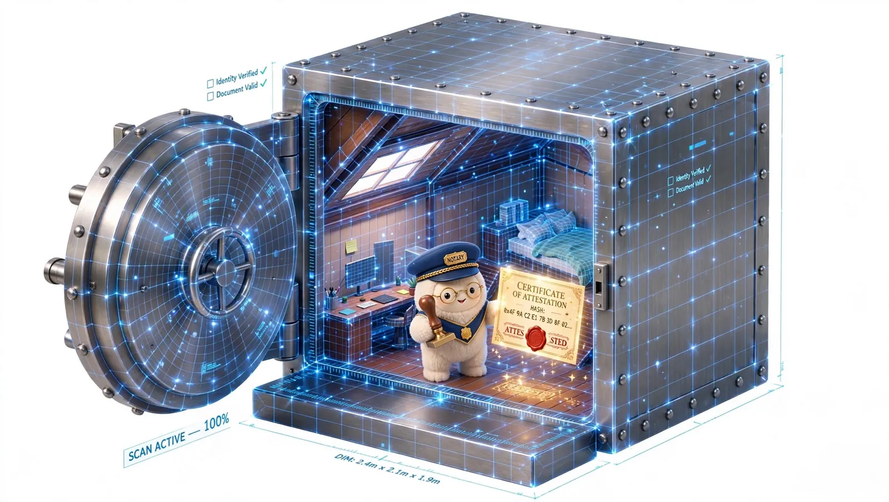
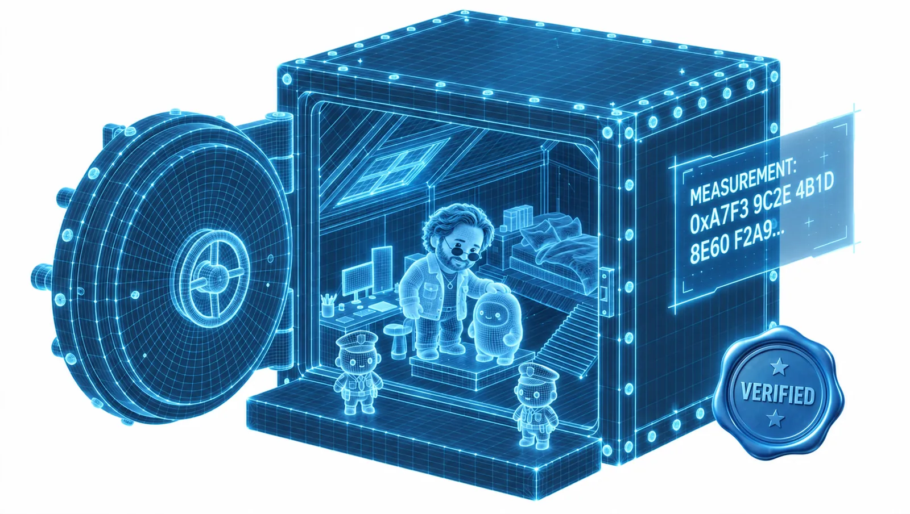

Attesting Muse's TEE
This article explains remote attestation: how a trusted execution environment (TEE) proves to another machine exactly which code it launched. It walks through each step, from memory isolation and the launch measurement to the signed report and its verification, then covers the pitfalls that let the wrong build pass. Meta's Muse agent is the running example.
It's speculated that Meta's Confidential VM, the virtual machine (VM) Muse will run in, is built on a TEE of this kind. Meta says the whole VM, including your data and conversations, will be encrypted “with a key only they hold, so not even Meta can access it.” Remote attestation is how you would check a claim like that: the CPU measures what the TEE launched, signs that measurement with a key its vendor certifies, and you compare the result with a build you can reproduce.

Before the scenes · Trusted execution environments
What a TEE is
A trusted execution environment (TEE) is hardware-enforced isolation for code and data. On cloud servers today the TEE is usually a whole confidential VM: the CPU encrypts the VM's memory with keys held inside the processor and stops the hypervisor (the software layer that runs VMs) from reading or modifying it. The host still runs the VM, but its operating system (OS), hypervisor and administrators can't see inside. The CPU can also sign a statement of what the VM launched. That statement is an attestation report, and checking it from another machine is remote attestation.
How remote attestation works
- IsolateThe CPU encrypts the VM's memory with a per-VM key generated inside the processor, and blocks the hypervisor from reading or remapping those pages.Scene 03
- MeasureWhile the VM is created, the CPU hashes its initial memory image (firmware, and often the kernel, the initial RAM disk or initrd, and the kernel command line) into a launch measurement.Scene 04
- ReportOn request, the CPU signs a report with the measurement, firmware version, launch policy and a nonce (a one-time random value) from the verifier, using a key the chip vendor certifies.Scene 05
- VerifyThe verifier checks the signature chain to the vendor's root, the nonce, the policy, and that the measurement equals a known build. Only then does it release secrets.Scene 06
Services run the same exchange with each other. A key management service can release a disk-decryption key only to a VM whose report verifies, and two TEEs can exchange reports before opening an encrypted channel (attested TLS, Transport Layer Security).
Where they came from
- 2003The first Trusted Platform Modules (TPMs), version 1.1b, ship in PCs and record each boot stage's hash in platform configuration registers (PCRs): measured boot.
- 2003Arm announces TrustZone with the ARM1176JZ-S core, splitting a chip into a normal world and a secure world.
- 2013Apple's Secure Enclave ships in the iPhone 5s to protect encryption keys and Touch ID data.
- 2015Intel Software Guard Extensions (SGX) arrive with 6th-generation Core (Skylake) processors, adding enclaves inside a single process.
- 2017AMD Secure Encrypted Virtualization (SEV) ships with the first EPYC server processors and encrypts each VM's memory.
- 2020Amazon Web Services (AWS) makes Nitro Enclaves generally available.
- 2021AMD adds SEV-SNP (Secure Nested Paging) with third-generation EPYC, which also protects memory integrity.
- 2023Intel Trust Domain Extensions (TDX) launch with 4th-generation Xeon Scalable processors.
- 2023NVIDIA opens early access to confidential computing on H100 GPUs, with general access in April 2024.
Why now
AI agents process some of the most sensitive data people have, on servers and GPUs the user doesn't control. A TEE lets an operator run that hardware without being able to read the workload, and attestation lets the user verify that from outside.
Building for TEEs used to be hard. Intel SGX made developers split a program into a trusted enclave and an untrusted host, declare every call between the two in an interface file, and fit the enclave into about 128 MB of protected memory on early chips. Attestation ran through an Intel service that required registration, and side-channel attacks from Foreshadow (2018) to ÆPIC Leak (2022) kept forcing patches.
Crypto pushed the tooling forward. Secret Network ran private smart contracts on SGX from 2020, and in 2022 researchers extracted its master decryption key through SGX flaws, making TEE security a public research topic. In 2024, Flashbots' BuilderNet moved Ethereum block building into TEEs, and TEE_HEE, from Nous Research and Flashbots, ran an AI agent whose passwords and wallet key never left an Intel TDX confidential VM. Along the way came open frameworks such as Dstack and on-chain verifiers for attestation reports.
Confidential VMs removed most of the porting work. SEV-SNP and TDX run an unmodified OS, so existing software moves in without a rewrite. Apple's Private Cloud Compute and WhatsApp's Private Processing apply the same idea to AI requests, and Meta says Muse's Confidential VM is intended to “cryptographically and verifiably” keep Meta out.
Where you'll find one
- AWS. Nitro Enclaves (2020), and AMD SEV-SNP on M6a, C6a and R6a EC2 instances since 2023, with NitroTPM for measured boot.
- Microsoft Azure. Confidential VMs on AMD SEV-SNP and Intel TDX, confidential containers on Azure Container Instances, Intel SGX enclave VMs, and confidential VMs with NVIDIA H100 GPUs.
- Google Cloud. Confidential VMs on AMD SEV, SEV-SNP and Intel TDX, Confidential GKE (Google Kubernetes Engine) nodes, Confidential Space for attested workloads, and confidential VMs with NVIDIA H100 GPUs.
- Your own servers. AMD EPYC and Intel Xeon processors support SEV-SNP and TDX, and recent Linux KVM and QEMU releases can host confidential VMs on them.
- GPUs. NVIDIA H100 and Blackwell GPUs can be attached to a confidential VM. The GPU produces its own attestation report, and CPU–GPU transfers are encrypted.1
- Phones. Arm TrustZone and Apple's Secure Enclave protect device keys and biometric data. Android's protected KVM hypervisor (pKVM, built on Linux's Kernel-based Virtual Machine) runs isolated VMs, and apps can prove key and device properties to a server with Android Key Attestation or Apple's App Attest.
1 For implementation details, see NVIDIA’s GPU attestation documentation.
The illustrations give each party a character: Mac is the verifier, the notary is the CPU's security hardware, the vault is the confidential VM, and the data center is Meta's host. The text uses the real terms.
The parties
Mac
A white-hat cybersecurity steward. Mac holds the key and releases it only after the VM's attestation report verifies.
Muse
The agent code running inside the confidential VM. It acts on your accounts, so it handles sensitive data.
The CPU
Security hardware in the processor, such as AMD's Secure Processor or Intel's TDX module. It measures the VM at launch and signs attestation reports.
Meta's data center
Hypervisor, host OS, storage, network and operators. It runs the VM and relays its traffic but can't read or modify its memory.
Also shown: Sentinel, a separate agent that, in Meta's design, approves Muse's connector actions and outbound network requests.
Scene 01 · The workload
Muse runs on hardware you don't control
Muse books travel, fills in forms and sends messages on your behalf. Each user's Muse runs in its own VM on Meta's servers, and in an ordinary VM the hypervisor can read all of the guest's memory.
Scene 02 · Threat model
In a standard VM, the host can read everything
“…encrypted with a key only they hold, so not even Meta can access it.”
Meta, Introducing Muse. The Confidential VM is with testers now and due later this year.

Scene 03 · Memory isolation
Encrypted memory the hypervisor can't read
In a confidential VM (AMD SEV-SNP or Intel TDX), the CPU encrypts the VM's memory with a key generated and kept inside the processor. Its integrity protection also stops the hypervisor from remapping or overwriting those pages. The host still controls availability: it can pause or stop the VM, and it carries all disk and network traffic, so the VM has to encrypt those itself.

Scene 04 · Launch measurement
Measured before the first instruction runs
While the VM is being created, the CPU hashes its initial memory image into a launch measurement (on SEV-SNP, a 48-byte hash computed with SHA-384, one of the standard Secure Hash Algorithms). It covers the virtual firmware, and also the kernel, initrd and kernel command line when the launch is set up to measure them. Once the VM starts, the value is fixed for that boot. Neither the guest nor the host can change it. The card below shows the field's bytes and how they're built.
- Virtual firmware
- Kernel, initrd and command line, when measured at launch
- The root filesystem, if the command line pins it with a dm-verity root hash (Linux's block-level integrity check)
- Code or files loaded after boot
- Config the host injects later
- Memory contents at runtime
The MEASUREMENT field of an SEV-SNP attestation report
48 bytes, one SHA-384 digest. The field sits at offset 0x90 of the report, between the guest's REPORT_DATA and the host-supplied HOST_DATA. No individual byte encodes a version or a component. The whole value identifies one exact set of launch inputs.
One report, two halves, checked against two different listsPlatform half · AMD's
REPORTED_TCB offset 0x180 · 8 bytes
SIGNATURE offset 0x2A0 · by a key unique to this chip (VCEK)
The security version numbers (SVNs) of the chip's firmware and microcode, and a signature that chains to AMD's root key. AMD publishes the facts through its Key Distribution Service (KDS). The verifier checks that the chain verifies and the TCB meets its minimum.
Image half · Muse's
MEASUREMENT offset 0x90 · 48 bytes, shown above
HOST_DATA offset 0xC0 · where the platform uses it
The hash of what was launched. AMD says nothing about whether it's good; the chip reports whatever it measured. Muse's publisher publishes the expected value, and the verifier checks it against its own approved list.
A genuine signature proves the platform half. Only the approved list proves the image half. Scene 08 shows what happens when the second check fails.
How the AMD Secure Processor builds it, one page at a time- Start48 zero bytes0000 0000 …
- 1Virtual firmware pagesOpen Virtual Machine Firmware (OVMF), contents hashed page by page51c5 4c84 …
- 2Special pages listed in the firmware's metadataZeroed pages, the secrets page and the CPUID page (the processor features the guest sees) are recorded by type and address only. The kernel hashes page carries SHA-256 of the kernel
032b 6a39…, initrd and command line.cf46 0482 … - 3Initial vCPU stateOne VM save area (VMSA) page per virtual CPU, holding its starting registers. Measured last.= MEASUREMENTa7f3 9c2e …
Example values. This is the direct-boot layout QEMU uses with AMD's OVMF build. Without the kernel hashes page, the kernel isn't in the launch measurement at all. Real inputs are PAGE_INFO structures from AMD's SEV-SNP firmware application binary interface (ABI), and tools such as sev-snp-measure recompute the value from the same firmware, kernel, initrd and command line.

Scene 05 · Attestation report
A signed report the host can relay but not forge
To get proof, your app sends a fresh random nonce. Muse's VM asks the CPU for an attestation report containing the launch measurement, the version of the trusted computing base (TCB: the firmware and microcode the protection depends on), the launch policy (for example, whether debugging is allowed) and 64 bytes of report data supplied by the guest, here set to your nonce. The CPU signs the report with a per-chip key that the vendor certifies.
The nonce shows the report was produced after you asked. It doesn't trigger a new measurement; the report still carries the value computed at launch.
Scene 06 · Verification
What the verifier checks
- Signed commits and tags on GitHub show which developer's key signed the source or a release.
- Code-signing certificates, such as Apple Developer ID with notarization or Windows Authenticode, show which publisher signed an app and that the file hasn't changed since.
- Build provenance, such as a Sigstore signature or a Supply-chain Levels for Software Artifacts (SLSA) attestation, links a binary to the source and build system that produced it.
- Published checksums let you confirm a download matches what the publisher posted.
The expected measurement has to come from a source you trust: your own rebuild of the published source, or values published by independent auditors. That requires a reproducible build, one that produces identical bytes every time.
Scene 07 · Mismatch
Any change to the image changes the measurement
A cryptographic hash maps any change, even one character, to an unrelated value. Suppose a build of Muse sends messages without asking Sentinel first. The source change is one line, but the measurement is completely different. Try it below.
Try it · one line, one hash
MATCH
A simplified example: the SHA-256 of a single line, computed in your browser. A real launch measurement covers the entire boot image.
Scene 08 · In production
When the measurement doesn't match
Mac checking a report by hand is a teaching device. In production nobody reads hex. The verifier is software that runs every time a VM starts or a client connects, and the question that matters is what it does when the values differ.
An attacker who changes Muse's image can't forge AMD's or Intel's signature, and doesn't need to. They boot the modified image on a real chip, and the chip signs a genuine report whose MEASUREMENT is different. The vendor signs a modified guest just as readily as the published one. A verifier that only checks the signature keeps talking to that VM. One that also requires a measurement it has already approved stops.
What the verifier sees, and what it does
The report isn't from a trustworthy chip. AMD and Intel publish revocation status in the signed collateral they issue after each TCB update.
The firmware or microcode is older than the policy allows. An out-of-date TCB passes only inside a grace period the policy states in writing.
Refuse that VM only. Keep using every VM that still presents an approved measurement, and don't add the new value because the signature checks out.
Proceed: open the connection, or release the key.
Who does the checking
The client app
Before sending a request, the app verifies the report, usually inside the TLS handshake (attested TLS), and refuses to connect if it fails. Apple's Private Cloud Compute clients work this way.
A key release service
A key broker, or the user's own device, releases the VM's disk and data keys only to a report that matches policy. On AWS, a KMS key policy names the expected PCR values; with the wrong ones the enclave still runs but can't decrypt.
An attestation service
Microsoft Azure Attestation, Google Cloud Attestation and Intel Trust Authority check reports against a policy and issue a signed token. Relying on one puts that provider in the decision; a verifier can instead check the vendor certificate chain itself.
Mac's real job
Write the policy those checks enforce, review each release before its measurement is approved, and investigate alerts. Mac sets the rules; software applies them on every boot.
Decision 1 · The platform half
Is this chip's firmware recent enough?
- Who publishes the facts
- AMD's Key Distribution Service (KDS) and Intel's Provisioning Certification Service (PCS) publish signed collateral listing each TCB level and its security advisories.
- Who decides
- The verifier's policy sets a minimum TCB. The vendor reports status; it doesn't decide whether an out-of-date platform is acceptable to you.
Decision 2 · The image half
Is this the Muse build we approved?
- Who publishes the facts
- Whoever built the release publishes its expected measurement. The chip only reports the hash of what was launched.
- Who decides
- The verifier's policy, after someone has reviewed what changed. A new value is added only through a channel the verifier already trusts: a signed policy update or a transparency log.
- The check fails closedA wrong measurement, a debug launch or a TCB below the floor all count as untrusted. There is no partial trust.
- The keys stay sealedThe VM may boot, but it can't decrypt stored data or reach its secrets.
- Clients refuse that VM, not the serviceThe attested handshake fails, so apps send nothing to it and are routed to instances that verify.
- The instance is replacedThe orchestrator drains it and relaunches from the approved image.
- The report is keptA CPU-signed report with the wrong measurement shows what the host launched. It goes to the security team.
Every vendor gives the verifier the same instruction: keep an allowlist
| Platform | What its documentation tells the verifier to do |
|---|---|
| Intel TDX | Appraise the quote against a list of expected measurements and a TCB policy. An unlisted measurement fails; a revoked TCB fails; an out-of-date TCB passes only within a stated grace period. |
| AMD SEV-SNP | Check the signed report against an approved launch measurement, HOST_DATA and a minimum TCB. AMD signs reports; it doesn't publish which guest images are acceptable. |
| AWS Nitro Enclaves | Name the expected PCR values in the KMS key policy. A different PCR can't decrypt. |
| Azure confidential containers | Compare the policy hash in HOST_DATA to the expected one before releasing a secret. A mismatch stops the release. |
| Google Cloud TDX | Compare MRTD and the RTMRs to your own policy. Google's signed endorsement covers the firmware only, so the guest image is checked only if your policy names those registers. |
| Apple Private Cloud Compute | The device sends data only to a node whose measurement matches a release already in Apple's public transparency log. Unlisted nodes get nothing; listed ones keep working. |
Who approves a new measurement?
No industry body approves Muse's hash. Each existing group owns one layer: AMD and Intel publish TCB status, Certificate Transparency and Sigstore's Rekor log that something was published, and IETF SCITT (Supply Chain Integrity, Transparency and Trust) standardizes signed statements and log receipts. None of them judges whether a build is good. That decision stays with the verifier's policy, fed by the publisher through the update channel the verifier pinned.
Why that channel needs more than one key
If an attacker steals the single key that signs policy updates, verifiers approve the attacker's measurement. Requiring several signers, and publishing every approval in a public log, means one stolen key can't quietly retarget a single customer. Apple publishes every Private Cloud Compute release in a public log for the same reason.
Not every mismatch is an attack
A release deployed before its measurement reached the approved list, a cloud firmware or paravisor update that changed the measured layer, or a debug build shipped by mistake all fail the same way. The response is the same too: refuse first, then investigate.
What attestation can't stop
The host can always refuse to run Muse or drop its traffic. Attestation doesn't guarantee availability. It stops the host from passing a different VM off as the published one.
Scene 09 · Pitfalls
Three common TEE verification pitfalls
Trusting report data
The guest fills in the report's 64-byte data field itself, so a version string or source hash placed there is only what the code inside chose to write. Pin the launch measurement, which the CPU computes.
Accepting debug launches
A VM launched with debugging allowed still gets a validly signed report, but the host can read its memory. Check the policy and reject debug launches. Nitro enclaves in debug mode report all-zero PCRs.
Assuming the measurement covers more than it does
An SEV-SNP report carries several fields, and each vouches for something different. Only MEASUREMENT is a hash of guest code computed by the CPU, and no field in the report follows code that changes after launch.
| Field | Set by, and when | Covers | Doesn't cover |
|---|---|---|---|
| MEASUREMENT48 bytes | AMD Secure Processor, while the VM is created | Everything loaded before the first instruction: the firmware, the initial vCPU state, and the kernel, initrd and command line if their hashes page is measured. On the major clouds it covers the firmware, a paravisor or a utility VM instead of your OS; see the platform table below. | The root disk, anything loaded or changed after launch, and memory at runtime. |
| HOST_DATA32 bytes | The host, at launch; fixed afterward | Whatever the host commits to. Azure confidential containers put the SHA-256 of the container security policy here, and that policy lists each image layer's dm-verity root. | Enforcement. Code inside the VM has to apply the policy; the CPU only records the value. |
| ID_KEY_DIGEST AUTHOR_KEY_DIGEST48 bytes each | The VM owner signs an ID block, which the host passes in at launch | Which key approved the launch image. The firmware refuses to start the VM if its measurement differs from the one in the ID block, which also sets FAMILY_ID, IMAGE_ID and the guest security version number (SVN). | Anything after launch. Without an ID block, these fields are zero. |
| POLICY REPORTED_TCB PLATFORM_INFO | The guest policy at launch; the rest by the platform | Whether debugging and migration are allowed, the firmware and microcode versions (TCB), and platform features such as simultaneous multithreading (SMT). | The guest's code. |
| REPORT_DATA64 bytes | The guest, each time it asks for a report | A nonce or a public-key hash, which proves freshness or binds a TLS key to the report. | Anything about code. It isn't a measurement. |
| vTPM PCRsoutside the SNP report | A paravisor or a Secure VM Service Module (SVSM) inside the confidential VM, during boot and at runtime | The boot chain after the firmware (bootloader, kernel, initrd, command line) and, with Linux's Integrity Measurement Architecture (IMA), each file as it is executed or loaded. | Anything the hosting layer misses. The PCRs are only as trustworthy as the paravisor or SVSM, which MEASUREMENT must cover, and each entry has to be checked against the event log. |
The AMD Secure Processor hashes the initial guest memory once, at launch, and then freezes MEASUREMENT. A direct launch can place the firmware, kernel, initrd and command line in those launch pages, and sev-snp-measure recomputes the same digest from them. A disk attached after launch is outside it. SEV-SNP also has no hardware register the guest can extend afterward; Intel TDX has four, the runtime measurement registers (RTMRs). So if code inside the VM downloads a new binary, patches itself or runs a script from an unmeasured disk, the next report carries the same MEASUREMENT. To cover that, pin a read-only root filesystem with a dm-verity hash on the measured command line and refuse to run anything outside it, or record each load with IMA in a vTPM and verify the event log. Sentinel's policy belongs in that pinned image.
What MEASUREMENT contains depends on where the VM boots
| Where it boots | What MEASUREMENT is | Where the OS or image is measured instead |
|---|---|---|
| Direct launchimage placed in the launch pages | The starting image: firmware, kernel, initrd and command line | Nowhere else needed for boot. Anything that changes after launch is unmeasured. |
| AWS EC2 SEV-SNP | The OVMF firmware, which AWS publishes as a reproducible build | Kernel and initrd in NitroTPM, AWS's vTPM |
| Google Cloud SEV-SNP | The virtual firmware | Bootloader, kernel and userspace in the Shielded VM vTPM, which Google classes as software-attested |
| Azure confidential VM | The paravisor | The guest boot disk, in the paravisor's vTPM |
| Azure confidential containers | Microsoft's utility VM | The container image, through HOST_DATA: the hash of the security policy that names each layer's dm-verity root |
Scene 10 · Updates
Every release has a new measurement
0x090 a7 f3 9c 2e 4b 1d 8e 60 f2 a9 11 c4 7f ee 13 a9 0x0A0 b9 81 2f b4 40 c4 57 89 44 e3 f6 89 78 f9 ff 25 0x0B0 db 2e f4 23 b6 bd fe 4c 7f 89 46 98 a0 d8 26 9c
0x090 3c 8d 71 e0 5b 2a 23 c2 49 83 4a 9d 24 25 2e f6 0x0A0 86 51 33 ac 66 ca f6 44 f2 97 95 36 66 08 07 1c 0x0B0 8c b1 b2 c4 3a 54 e5 2e 56 37 8c e5 15 e6 b2 c1
No byte position matches. A verifier compares the full 48 bytes against the approved list in the transparency log.
A measurement identifies code; it doesn't vouch for it. A backdoored build has a valid measurement of its own. So a new measurement should be accepted only after independent review of the source change and publication in an append-only transparency log. The log gives every verifier the same list, so no one can be shown a build that nobody else sees. Meta says it has started giving external auditors the Confidential VM's design and source code, and plans a continuous audit “visible to and inspectable by anyone.” (Meta AI)

What you can verify
“This VM launched from the published Muse build. The CPU signed that measurement, and I verified it.”
Six questions to ask when the Confidential VM ships
- Which TEE does it use (SEV-SNP, TDX or another), and which register holds Muse's measurement?
- Are expected measurements published, and can outsiders reproduce them from source?
- Does verification reject debug launches and outdated TCB versions?
- Is Muse's code, Sentinel included, in the measured image, or only a paravisor or firmware layer beneath it?
- Is your decryption key released only after attestation succeeds, and by which service?
- Is there an append-only log of approved measurements, and who else signs it?
For engineers
Platform specifics
# term platform specifics confidential VM AMD SEV-SNP, Intel TDX; AWS Nitro Enclaves are a related isolated-VM design CPU root of trust AMD Secure Processor, Intel TDX module, AWS Nitro Security Module (NSM) launch measurement SNP MEASUREMENT; TDX MRTD (measurement of the trust domain's firmware) + RTMR[1..2] (runtime measurement registers for the boot chain); Nitro PCR0/PCR2 attestation report SNP attestation report, TDX quote, Nitro attestation document vendor signature AMD VCEK (chain ARK → ASK → VCEK); Intel quoting enclave, certified through the Provisioning Certification Key (PCK) chain; Nitro NSM nonce REPORT_DATA (SNP, TDX); nonce or user_data (Nitro) report data 64 guest-chosen bytes, not a measurement debug policy SNP guest policy DEBUG bit; TDX ATTRIBUTES.DEBUG; Nitro debug mode zeroes PCRs paravisor provider layer inside the confidential VM, beneath the guest OS (Azure); OS measured into its vTPM runtime registers TDX RTMR[0..3], vTPM PCRs; verify against the event log transparency log append-only log of approved measurements (for example, Sigstore Rekor) the check vendor chain valid AND policy OK AND nonce fresh AND measurement == rebuilt image